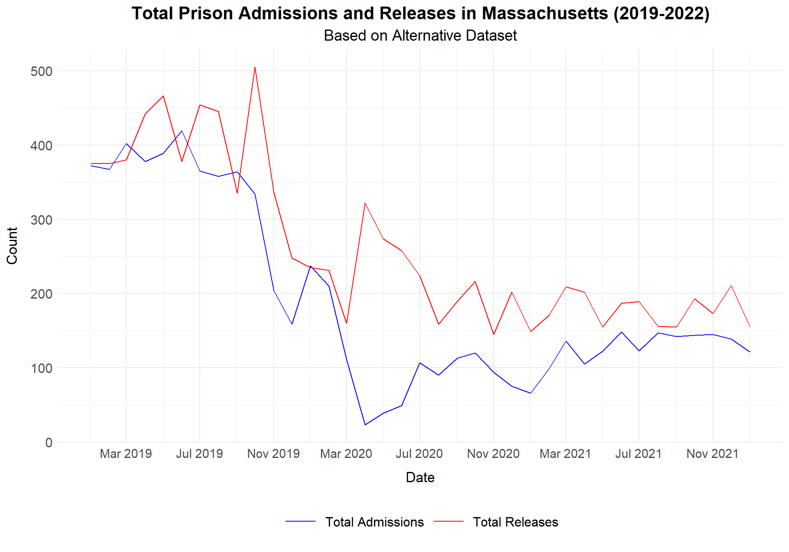

The following objects are masked from 'package:stats':
filter, lag
The following objects are masked from 'package:base':
intersect, setdiff, setequal, union
library(ggplot2)library(lubridate)
Attaching package: 'lubridate'
The following objects are masked from 'package:base':
date, intersect, setdiff, union
library(readxl)
data =readRDS("dataset/cleaned_dataset.rds")
data$date <-as.Date(data$Date)data_filtered = data %>%filter(State =="California") %>%filter(date >=as.Date("2019-01-01") & date <=as.Date("2022-01-01")) %>%group_by(date) %>%summarise(Total_Admissions =sum(Total_Admissions, na.rm =TRUE),Total_Releases =sum(Total_Releases, na.rm =TRUE))ggplot(data_filtered, aes(x = date)) +geom_line(aes(y = Total_Admissions, color ="Total Admissions")) +geom_line(aes(y = Total_Releases, color ="Total Releases")) +labs(title ="Total Prison Admissions and Releases in California (2019-2022)",subtitle ="Based on Original Dataset",x ="Date",y ="Count" ) +theme_minimal() +scale_color_manual(values =c("Total Admissions"="blue", "Total Releases"="red"),name =NULL ) +theme(plot.title =element_text(size =16, face ="bold", hjust =0.5),plot.subtitle =element_text(size =14, hjust =0.5),axis.title.x =element_text(size =13, margin =margin(t =10)),axis.title.y =element_text(size =13, margin =margin(r =10)), axis.text.x =element_text(size =11.2),axis.text.y =element_text(size =12),legend.position ="bottom",legend.text =element_text(size =12),legend.key.size =unit(1.2, "cm")) +scale_x_date(date_breaks ="4 months", date_labels ="%b %Y")
The analysis of California’s prison admissions and releases data from January 2019 to December 2021 highlights notable shifts, particularly during 2020, likely driven by the COVID-19 pandemic. In January 2019, admissions were 2716 and releases were 3476, showing a slightly higher rate of releases than admissions. This pattern, where releases slightly exceeded admissions, persisted throughout 2019. For instance, in November 2019, admissions were 2592 and releases were 3050, and in December 2019, admissions were 2705 while releases were 3260. This steady pattern allowed for a slow reduction in the prison population over the year.
A major shift began in early 2020 as COVID-19 spread, leading to drastic changes in both admissions and releases. In March 2020, admissions were 2272, and releases were 3117, but in April 2020, admissions dropped sharply to 9 while releases surged to 4629. This large discrepancy of 4620 between releases and admissions marked a significant departure from previous trends, suggesting a possible policy response aimed at reducing prison populations to mitigate health risks. This trend continued in the following months, as seen in July 2020, when admissions remained exceptionally low at 9, while releases peaked at an extraordinary 7522, the highest monthly release count observed in the entire period. This drastic imbalance, where releases outpaced admissions by 7513, underscores the impact of policies that prioritized reducing prison populations.
Throughout 2020, releases consistently exceeded admissions by substantial margins. For example, in August 2020, admissions were only 105, while releases reached 4682, resulting in a difference of 4577. In September 2020, admissions were 538 compared to 3604 releases, maintaining the trend of significant population reductions. Even by December 2020, this release-focused approach persisted, with admissions at just 10 against 1995 releases.
By 2021, the data indicates a gradual return toward more balanced admissions and releases, though not yet at pre-pandemic levels. For instance, in January 2021, admissions were 593 while releases were 1820, showing a significant gap, though less drastic than in 2020. Over the months, admissions steadily increased. In July 2021, admissions rose to 2961, nearly matching the 2459 releases, and by December 2021, the gap had further narrowed, with admissions at 2904 and releases at 2640, signaling a shift closer to pre-COVID patterns.
These trends reveal three clear phases: a relatively stable admissions-releases balance in 2019, a drastic release-focused reduction in 2020, with releases exceeding 7000 in July, and a steady adjustment back to prior patterns in 2021. This progression suggests that California’s prison system adjusted its policies in response to the pandemic, initially prioritizing population reduction and then gradually returning to typical operations as conditions improved. The data demonstrates how admissions rose steadily through late 2021, approaching a balance closer to pre-pandemic patterns, reflecting a potential shift back to typical operations in the prison system.
Comparative Analysis of California Prison Admissions and Releases Using New Data
That was the analysis based on our original dataset, selected as the foundation of our study from day one. Our group has since identified a complementary California-specific dataset from the California Department of Corrections and Rehabilitation, available at https://data.ca.gov/dataset/monthly-admissions-and-releases. This new California dataset, titled “California’s Monthly Admissions and Releases,” provides monthly records of the number of individuals admitted to and released from California’s CDCR custody from January 31, 2014, to the present.
In response to our project’s objective, which suggests looking for a related dataset to enable a comparative analysis of California’s prison system, we aim to validate and compare results from our initial dataset with this new California source. By doing so, we can assess any discrepancies or confirm our findings regarding the trends in California prison admissions and releases, especially during the COVID-19 period.
For this comparison, we will focus exclusively on three critical years (2019, 2020, and 2021) to highlight COVID-19’s impact on California’s prison population dynamics. The new California-specific dataset includes the following columns:
Date: Marks the end of each month when California prison admissions and releases were recorded.
TotalAdmissions: The total admissions for each month in California prisons.
TotalReleases: The total releases for each month from California prisons.
The following analysis and plot using the new California dataset will enable us to explore possible discrepancies and validate our conclusions drawn from the original data about California’s prison system.
ca_monthly_admissions_releases <-read.csv("dataset/monthlyreleases2014-20241031.csv")ca_monthly_admissions_releases$Date <-as.Date(ca_monthly_admissions_releases$Date, format ="%m/%d/%Y")
The analysis of California’s prison admissions and releases from January 2019 to January 2022 reveals some small discrepancies between the two datasets. These differences may stem from the fact that the data originated from different sources, each likely employing slightly varied methods for data collection, rounding, or classification. Despite overall similar trends, the monthly totals sometimes vary, particularly during key periods such as the COVID-19 pandemic in 2020.
2019: Minor Monthly Variations
In 2019, both datasets consistently show that releases exceeded admissions, suggesting a gradual reduction in the prison population across California. However, some monthly figures vary slightly. For instance, in November 2019, the original dataset records 2592 admissions and 3050 releases, while the new dataset reports 2590 admissions and 3024 releases. Similarly, in December 2019, our original dataset shows 2705 admissions and 3260 releases, whereas the new dataset lists 2702 admissions and 3253 releases. These small differences, although unlikely to impact overall trends significantly, suggest subtle differences in reporting or rounding conventions between the two sources.
2020: Noticeable Differences During COVID-19 Impact
The most significant discrepancies appear during 2020, a year marked by drastic policy changes in response to COVID-19. Both datasets reflect a steep decline in admissions and a surge in releases as California likely implemented measures to reduce prison populations. However, the specifics differ. For example, in April 2020, our original dataset records 9 admissions and 4629 releases, while the new dataset shows only 2 admissions with 4627 releases.
A similar pattern is observed in July 2020, a peak period for releases: the original dataset lists 9 admissions and 7522 releases, whereas the new dataset shows 3 admissions and 7520 releases. Although these variations are minor, they indicate that each dataset has slightly different figures, potentially due to differences in data classification or inclusion criteria. Additionally, both datasets capture the high release counts around mid-2020, though the new dataset tends to show slightly lower total releases for certain months.
2021: Differences in the Path Back to Balance
In 2021, as admissions and releases began to move toward a balance, the datasets remain aligned in terms of general trends but continue to differ in specific numbers. In January 2021, for instance, our original dataset shows 593 admissions and 1820 releases, while the new dataset records 409 admissions and 1817 releases. As the year progresses, both datasets display more consistency. By July 2021, the numbers are nearly identical, with both datasets showing 2961 admissions, although our original dataset reports 2459 releases, while the new dataset lists 2457. By December 2021, the two datasets converge closely, with both listing around 2904 admissions and 2637-2640 releases, signaling a return to pre-COVID patterns.
Summary of Dataset Comparisons
Overall, both datasets depict three distinct phases in California’s prison admissions and releases: a stable 2019, a drastic adjustment period in 2020 due to COVID-19, and a gradual return to balance in 2021. Minor discrepancies, particularly in 2020, suggest variations in data reporting practices between the sources, which may influence specific monthly totals. Despite these differences, the datasets align well in illustrating the broader trends, reinforcing the understanding of California’s response to the pandemic within its prison system.
This plot based on our original dataset shows the trend of total prison admissions and releases in Massachusetts from 2019 to 2021. In 2019, both admissions and releases remained relatively high, with fluctuations throughout the year. For instance, admissions peaked in June 2019 with around 650, while releases were highest in October 2019, reaching approximately 750. However, starting in early 2020, admissions dropped sharply due to the pandemic, reaching as low as 96 in April 2020. Releases also declined but not as drastically, and they continued to exceed admissions throughout much of 2020. By mid-2020, admissions began to rise again but remained well below pre-pandemic levels. In 2021, both admissions and releases stabilized, with releases generally staying higher than admissions.
# Load the datasetdata_MA <-read_excel("dataset/Admission_and_Release_Trends.xlsx", sheet ="Admission_and_Release_Trends")# Filter and transform the data for Massachusetts (if applicable)data_filtered_MA <- data_MA %>%mutate(date =as.Date(paste(Year, Month, "1", sep ="-"), format ="%Y-%B-%d")) %>%filter(Agency =="MA Department of Correction") %>%filter(date >=as.Date("2019-01-01") & date <=as.Date("2022-01-01")) %>%group_by(date, Event) %>%summarise(Total_Count =sum(Count, na.rm =TRUE), .groups ="drop") %>%ungroup() %>% tidyr::pivot_wider(names_from = Event, values_from = Total_Count, values_fill =0)# Plot the dataggplot(data_filtered_MA, aes(x = date)) +geom_line(aes(y = Admission, color ="Total Admissions")) +geom_line(aes(y = Release, color ="Total Releases")) +labs(title ="Total Prison Admissions and Releases in Massachusetts (2019-2022)",subtitle ="Based on Alternative Dataset",x ="Date",y ="Count" ) +theme_minimal() +scale_color_manual(values =c("Total Admissions"="blue", "Total Releases"="red"),name =NULL ) +theme(plot.title =element_text(size =16, face ="bold", hjust =0.5),plot.subtitle =element_text(size =14, hjust =0.5),axis.title.x =element_text(size =13, margin =margin(t =10)),axis.title.y =element_text(size =13, margin =margin(r =10)),axis.text.x =element_text(size =11.2),axis.text.y =element_text(size =12),legend.position ="bottom",legend.text =element_text(size =12),legend.key.size =unit(1.2, "cm") ) +scale_x_date(date_breaks ="4 months",date_labels ="%b %Y" )

For comparative analysis of Massachusetts prison admissions and releases, we found a complementary dataset from the Massachusetts Government website, available at https://www.mass.gov/info-details/cross-tracking-system-state-county-correctional-populations. The dataset below “Downloads” section, titled “Admission_and_Release_Trends,” provides monthly records of the number of individuals admitted to and released from January 31, 2017, to the present.
The new dataset provides a similar timeline for Massachusetts admissions and releases but shows different numerical patterns and monthly peaks, reflecting possible differences in data sources or categorization methods. In 2019, admissions and releases also fluctuate, though the peak values are lower than those in the old dataset. For example, admissions reach a maximum of around 419 in June, significantly lower than the old dataset’s peak. In early 2020, both admissions and releases drop sharply, with admissions reaching a low of 23 in April—again lower than the old data. Unlike the old dataset, the new data suggests that releases do not stay consistently higher than admissions in late 2020; instead, they are closer in count. By 2021, both admissions and releases show a stabilized trend similar to the old dataset, although at a generally lower level.
In summary, while both datasets show similar patterns of decline and stabilization through the pandemic, the new dataset records consistently lower counts for admissions and releases compared to the old one.
df =read.csv("dataset/Race_California.csv")df_2019 <- df |>filter(Year ==2019)ggplot(df_2019, aes(x = Race, y = Population /1e6)) +geom_bar(stat ="identity", fill ="skyblue", color ="black") +labs(title ="Racial Demographics in California in 2019", x ="Race", y ="Population (in millions)") +theme_minimal() +theme(axis.text.x =element_text(angle =45, hjust =1))
df_2020 <- df |>filter(Year ==2020)ggplot(df_2020, aes(x = Race, y = Population /1e6)) +geom_bar(stat ="identity", fill ="skyblue", color ="black") +labs(title ="Racial Demographics in California in 2020", x ="Race", y ="Population (in millions)") +theme_minimal() +theme(axis.text.x =element_text(angle =45, hjust =1))
df_2021 <- df |>filter(Year ==2021)ggplot(df_2021, aes(x = Race, y = Population /1e6)) +geom_bar(stat ="identity", fill ="skyblue", color ="black") +labs(title ="Racial Demographics in California in 2021", x ="Race", y ="Population (in millions)") +theme_minimal() +theme(axis.text.x =element_text(angle =45, hjust =1))
In the bar plot, we displayed the racial demographic population in California for the years 2019, 2020, and 2021. This data was gathered from the USA FACTS website, which uses racial and ethnic population data from the US Census Bureau (https://usafacts.org/data/topics/people-society/population-and-demographics/our-changing-population/state/california/?endDate=2020-01-01&startDate=2019-01-01). During these years, the race categories remained relatively consistent in population numbers: Hispanic/Latino had the highest population, followed by White, Black, Multiracial, American Indian/Alaska Native, and Native Hawaiian and Other Pacific Islander. Moving forward, based on the dataset we are working with, we plan to categorize ‘Multiracial’ and ‘Native Hawaiian and Other Pacific Islander’ as ‘Other’ to align with the race categories we already use. With this race demographic data, we aim to combine it with California’s admissions/releases data and create a stacked bar plot. This will allow us to compare both sets of data and examine how the racial demographics of California compare to those in admissions and releases.